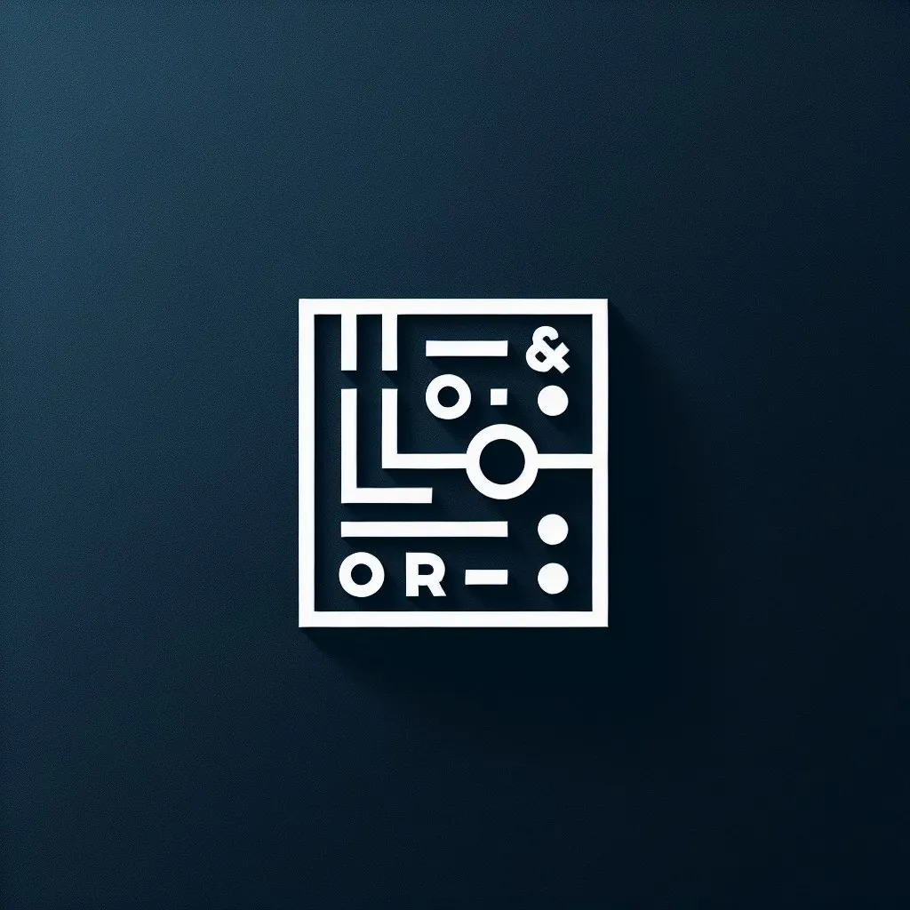

Соберите схему, зажгите светодиод
Симулятор логических схем: перетаскиваете элементы, соединяете проводами и сразу видите результат.
Y = A ∧ B = 0
Нажмите на кнопки A и B. В программе так же: щёлкаете по входу во время симуляции.
Таблица истинности
| A | B | Y |
|---|
Элементы на панели
Всё, что нужно для первых схем по информатике и цифровой электронике. Сигналы окрашиваются, так что видно, где сейчас единица.
- ИЕдиница, только если на обоих входах 1
- ИЛИЕдиница, если хотя бы на одном входе 1
- НЕМеняет 0 на 1 и обратно
- Искл. ИЛИЕдиница, если входы разные
- КнопкаВход: щёлкните, чтобы подать 1
- СветодиодВыход: горит, когда приходит 1
Как собрать первую схему
- Добавьте элементы
Кнопки на боковой панели ставят на поле элементы и устройства ввода-вывода.
- Расставьте
Перетащите элементы мышкой туда, где им удобно.
- Соедините
Щёлкните по выходу (серый кружок), затем по входу другого элемента.
- Запустите симуляцию
Нажмите «Start Simulation» и щёлкайте по кнопкам-входам: светодиоды ответят сразу.
- Сохраните
Схема записывается в файл
.lcsи открывается потом с панели инструментов.
| Левый щелчок | Выбрать элемент, начать провод |
| Правый щелчок | Удалить провод |
| Delete | Удалить выбранный элемент |
| Перетаскивание | Двигать элементы по полю |

Скачать
Стабильная сборка от 30 мая 2025 года. Дальше симулятор вырастет в эмулятор ПЛИС.
Готовое приложение
Это ранняя версия: иногда симуляция ошибается. Мы над этим работаем — о найденных ошибках пишите в issues на GitHub.
Windows и Linux: из исходников
# нужен Python 3
git clone https://github.com/arduradiokot/LogicCircuitSimulator.git
cd LogicCircuitSimulator
pip install customtkinter
python src/LogicCircuitSimulator.py